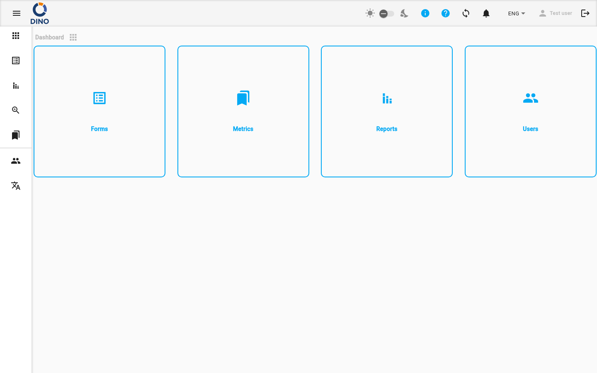

title: Navegación e Interfaz description: Una visión general de la aplicación Dino: la barra de herramientas, la navegación lateral, las notificaciones, la sincronización de datos y el área de usuario.
Navegación e Interfaz
La interfaz de Dino consta de una barra de herramientas superior y un menú de navegación lateral que están presentes en todas las páginas después de iniciar sesión.

Navegación Lateral
El menú lateral permite desplazarse entre las áreas principales de la aplicación.
Secciones estándar (visibles para todos los usuarios autenticados):
| Sección | Descripción |
|---|---|
| Panel de control | La pantalla de inicio. |
| Formularios | Formularios de recolección de datos y envíos. |
| Informes | Informes generados. |
| Agregación | Vista unificada de los envíos de múltiples formularios. |
| Métricas | Datos de referencia (proyectos, ubicaciones, organizaciones, etc.). (Oculto para usuarios solo invitados.) |
| GPT | Asistente de IA (DinoGPT). |
Secciones de administración (visibles solo para administradores, mostradas debajo de un separador):
| Sección | Descripción |
|---|---|
| Usuarios | Cuentas de usuario y grupos de permisos. |
| Idiomas | Gestión de traducciones de la interfaz. |
En pantallas grandes, el menú siempre está visible a la izquierda. En pantallas más pequeñas se contrae y se puede abrir con el botón de menú (icono de hamburguesa) en la barra de herramientas superior. En cualquier tamaño de pantalla, haga clic en el botón de menú para expandir las etiquetas del menú o contraerlas a solo iconos.
Barra de Herramientas Superior
La barra de herramientas en la parte superior de la pantalla contiene los siguientes controles, de izquierda a derecha:
- Alternar menú — abre o contrae el menú lateral.
- Logotipo — muestra el logotipo de su organización.
- Indicador de nueva versión — aparece un icono de descarga cuando hay una nueva versión de Dino disponible. Haga clic para recargar la aplicación y aplicar la actualización.
- Créditos DINO-AI — muestra su saldo de créditos de IA restante como una insignia. Haga clic para abrir el Área de Usuario en el panel de Créditos. (Visible solo si se ha configurado una clave API de DINO-AI.)
- Alternar modo oscuro/claro — un icono de sol, un control deslizante y un icono de luna. Use el control deslizante para cambiar entre temas claro y oscuro. (Oculto en móvil — use el Área de Usuario en su lugar.)
- Icono de información — pase el cursor para ver la información de versión de esta instalación.
- Icono de ayuda — abre la lista de reproducción de tutoriales de Dino en una nueva pestaña.
- Icono de configuración — abre el Área de Usuario.
- Icono de sincronización — muestra el estado actual de sincronización de datos. Haga clic para iniciar una sincronización manual.
- Campana de notificaciones — muestra el número de notificaciones no leídas como una insignia. La campana suena cuando llegan nuevas notificaciones. Consulte Notificaciones más abajo.
- Selector de idioma — cambia el idioma de la interfaz.
- Nombre de usuario — haga clic para abrir el Área de Usuario.
- Icono de cerrar sesión — haga clic para cerrar sesión. El icono aparece atenuado mientras hay una sincronización en curso o cuando el dispositivo está desconectado; no se puede cerrar sesión en esos estados.
Sincronización de Datos
Dino sincroniza sus datos con el servidor en segundo plano. El icono de sincronización en la barra de herramientas muestra el estado actual:
| Icono | Significado |
|---|---|
sync (estático) |
Todos los datos están actualizados. |
sync_problem (pulsante) |
Tiene cambios locales que aún no se han sincronizado. Haga clic para iniciar una sincronización. |
sync (girando) |
Hay una sincronización en curso. |
sync_disabled |
El dispositivo está desconectado; la sincronización no está disponible. |
sync con insignia ! |
Se encontró un problema de sincronización. Consulte sus notificaciones para más detalles. |
Cuando se completa una sincronización, aparece brevemente una notificación en la parte inferior de la pantalla:
- "Sincronización completada" — todos los datos se sincronizaron correctamente.
- "Sincronización completada con errores. No se pudo sincronizar: [elementos]. Por favor, revise sus notificaciones." — una o más colecciones de datos no pudieron sincronizarse. También se crea una notificación en su lista de notificaciones.
Notificaciones
Haga clic en el icono de campana en la barra de herramientas para abrir el menú desplegable de notificaciones. La insignia en la campana muestra el número de mensajes no leídos.

Desde el menú desplegable puede:
- Hacer clic en una notificación para marcarla como leída.
- Hacer clic en el botón de flecha en una notificación (si está presente) para navegar directamente al área correspondiente de la aplicación.
- Marcar todo como leído — marca todas las notificaciones actuales como leídas.
- Ver todas las notificaciones — navega a la página completa de Notificaciones.
Área de Usuario
Haga clic en el icono de configuración, su nombre de usuario o el contador de Créditos DINO-AI para abrir el cuadro de diálogo del Área de Usuario. Muestra su nombre completo y dirección de correo electrónico en la parte superior.

Cambiar Contraseña
- Ingrese su Contraseña actual.
- Ingrese una Nueva contraseña.
- Confirme la nueva contraseña.
- Haga clic en el botón de flecha para guardar.
Aparecerá un mensaje de error si la contraseña actual es incorrecta o si las nuevas contraseñas no coinciden.
Claves API
Vea o establezca su Clave API de DINO-AI. Una vez almacenada una clave válida, se muestra en modo de solo lectura. Use el icono de ojo para mostrar u ocultar la clave, y el icono de copia para copiarla al portapapeles.
Créditos
Muestra su saldo de créditos DINO-AI actual. Si hay una integración de pago configurada, hay un botón Agregar más disponible para comprar créditos adicionales.
Visibilidad
Esta sección solo es visible cuando se ha configurado una clave API de DINO-AI.
Tema DINO
Personalice el esquema de colores de la aplicación:
- Color primario, Color de acento, Color de advertencia — haga clic en los campos de color para abrir un selector de color.
- Nombre de preajuste — escriba o seleccione un nombre para guardar o cargar un preajuste de color.
- Haga clic en Guardar para guardar los colores actuales como un preajuste con nombre, o en Cargar para aplicar un preajuste guardado.
En móvil, también aparece aquí un alternador de modo oscuro/claro.
Tutoriales
Haga clic en Iniciar Recorrido por Dino para reiniciar el recorrido guiado de la aplicación desde el principio.
Disponibilidad
Esta sección solo se muestra si el recorrido guiado está configurado en su instalación.
Copia de Seguridad y Restauración
(Solo administradores, si está habilitado.)
- Respaldar datos — descarga una exportación completa de la base de datos de la aplicación como un archivo JSON.
- Restaurar datos — sube un archivo JSON previamente exportado para restaurar la base de datos.
Precaución al Restaurar
Restaurar datos reemplazará la base de datos actual. Esta acción no se puede deshacer.